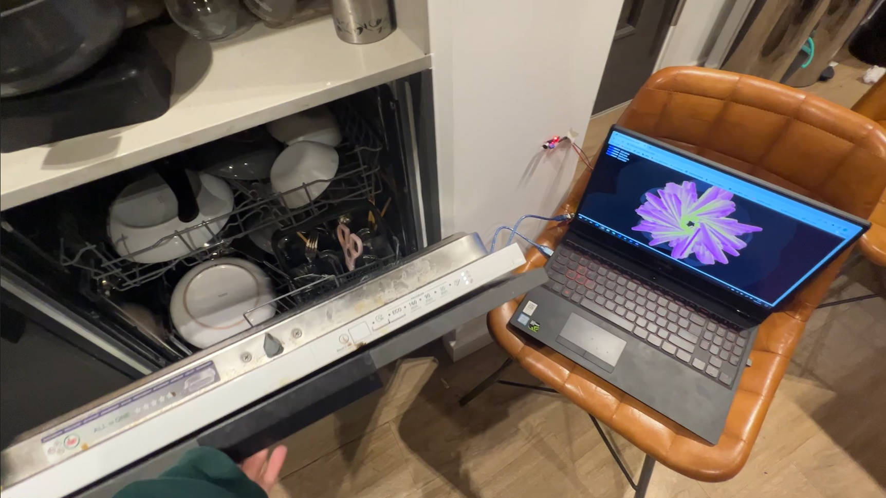

Introduction
Pink noise is a very common noise in nature, mainly in the low and middle frequency bands, analogous to the properties of pink light. Because the human ear is more sensitive to high frequency sounds, pink noise energy is distributed in the low and medium frequencies, making the whole sound harmonious and "a very pleasant noise".
The project collects common noises in my life and outputs a visualized pink noise image through artistic computer processing. Users can customize the pink noise to create an exclusive image based on the noise collected from their own surroundings. Hopefully, this will help to alleviate the anxiety that some noises can cause. It is also hoped that this project will help create a more accurate representation of the sound environment and in the future, as the project develops further, help to become a useful tool for people to manage their sound environment and improve their quality of life.
Concept and Background Research
For a person who has a high tolerance for noise, as long as they have a place to lie down, they can fall asleep. But there are still many people who, even though they can guarantee light and time, are particularly sensitive to outside noises, such as cars outside their windows, the start of the air conditioner or refrigerator in their own home, the footsteps of their neighbours, the flushing of the toilet, the crying of their children, are all factors that make it difficult for them to sleep.
For example, in the student flat I live in now: outside the window next to the DLR and the train station, the sound of trains passing by drifts into the room very early in the morning; outside the door in the corridor, you can often hear the neighbours' conversations or the loud sound of the door closing; back inside the house, the bathroom's intelligent exhaust system, even for something as trivial as washing hands, is overly sensitive and turns on automatically and lasts for a long time; in the kitchen, the sound of appliances, dishwashers and In the kitchen, the sounds of appliances, dishwashers, hoods and cooker hoods are interwoven.
Noise is one of those sounds that can be annoying and even dangerous to health. To add insult to injury, the cost of getting to the root of the problem is very high, so I have tried to visualize these noises in an interesting way and hope that by developing the project further I will be able to control them.
Technical Implementation
1. Control the angle of the squares forming the graphic with the amount of noise from the
window

2. The level of decibels of sound used in the kitchen controls the number of squares that make up the figure (i.e. the density of the figure) 
3. The number of layers that make up the graph is controlled by the decibel level of the sound in the bathroom.
4. The decibel level of sound in the corridor controls the size of the area of the squares forming the figure (i.e. the thickness of the figure)
5. Use p5.serialserver to connect to Arduino and p5.js

6. Creation of sliders, visualisation of noise decibels

Reflection and Future Development
So far with this project I have managed to collect the noise and stay with the visual graphics part. However, I still face some challenges in making it an effective tool to help people improve their quality of life. One of the main reasons why pink noise can help with sleep is due to the masking effect of the human ear and the phenomenon of human resonance. To move forward, I need to focus on implementing the functions of input noise, processing noise, and outputting pink noise. This will be the basis of my tool and will allow me to create a bespoke solution to manage the sound environment, providing a tool that can help people manage their sound environment and improve their overall well-being to improve people's quality of life.